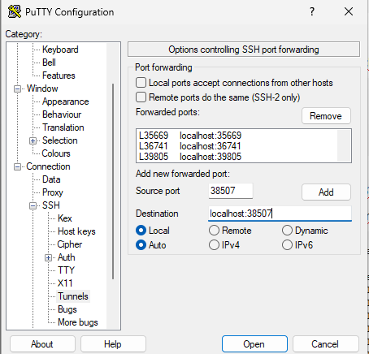
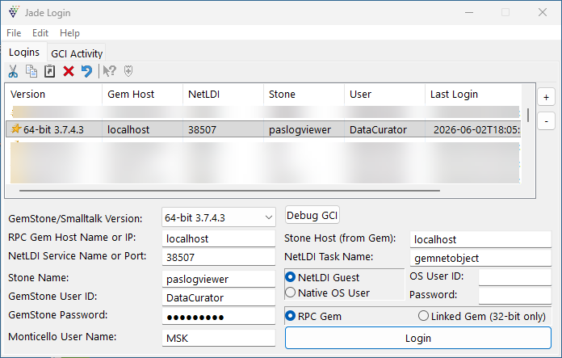
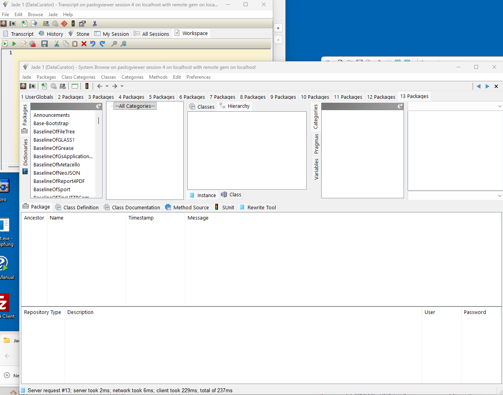

|
<< Click to Display Table of Contents >> Navigation: PASLOG-Viewer - Anwendungsbeispiel > Anlegen der Datenbank |
Zuerst einmal machen wir die Gemstone/S Seite fertig. Wir brauchen eine Datebank, in der wir entwickeln.
Wir legen eine eigene Registry an für Projekte, die mit der Standard Lizenz laufen sollen. Das bedeutet auch die kleine Datenbankgröße und auch die geringste Anzahl an möglichen Prozessen. Diese Registry nennen wir "standard" (Name ist inhaltlich nicht wichtig).
pas_create_registry.sh standard
Danach legen wir eine Datenbank mit der Gemstone-Version 3.7.5 an für die PAS-Entwicklung an. Dabei wird die Standard-Datenbank mit Seaside herunter geladen (inklusive der Standard-Lizenz) und in diese Version werden dann noch alle notwendigen Komponenten geladen, die PAS ausmachen:
•PostgreSQL Connector (PostgreSQL ist bereits komplett lokal installiert)
•RabbitMQ Connector (RabbitMQ ist bereits komplett lokal installiert)
•Report4PDF von Christian Haider
•und einige wenige Smalltalk-Bibliotheken für die Entwicklung
pas_create_pas_stone.sh paslogviewer standard 3.7.5 v100
•Die "v100" definiert die Version "v100" von PAS. Das ist die neueste Version.
•"3.7.5" bedeutet die Produktversion von Gemstone/S. Das System lädt die Daten von entsprechenden Repositories im Internet herunter. Woher kann man am besten immer in dem Skript herausfinden.
Mit
mf@stellaris:~$ pas_stones_list.sh | grep standard
Database Name Running NetLDI Port Version Registry
-------------------- --------------- ---------- --------------- -------------------------
paslogviewer Yes 3.7.5 standard
kann man überprüfen, ob die Datenbank angelegt wurde. Der Netldi-Prozess läuft noch nicht, daher kann sich die IDE noch nicht mit der Datenbank verbinden.
Das typische Prozeßabbild für eine laufende Datenbank sieht so aus:
41082 ? Ssl 0:01 \_ /datadisk/pas/standard/products/GemStone64Bit3.7.5-x86_64.Linux/sys/stoned paslogviewer -e /datadisk/pas/standard/stones/paslogviewer/system.conf -z /datadisk/pas/standard/stones/paslogviewer/system.conf -
41084 ? Sl 0:00 \_ /datadisk/pas/standard/products/GemStone64Bit3.7.5-x86_64.Linux/sys/shrpcmonitor paslogviewer~bb826256099af932 65536 76 1 5000 7000 1 1900 0 432 1 2 60 2 0
41115 ? Sl 0:03 \_ /datadisk/pas/standard/products/GemStone64Bit3.7.5-x86_64.Linux/sys/gem reclaimgcgem paslogviewer 1 -T 5000
41116 ? Sl 0:04 \_ /datadisk/pas/standard/products/GemStone64Bit3.7.5-x86_64.Linux/sys/gem symbolgem paslogviewer -T 20480
Nun muß noch der Netldi Prozeß gestartet werden. Das geschieht mittels:
mf@stellaris:~$ startNetldi.solo paslogviewer --registry=standard
====== starting netldi at 2026-06-04T04:30:10.915790-07:00
startnetldi[Info]: setting GEMSTONE_NRS_ALL='!#netldi:paslogviewer_ldi'
startnetldi[Info]: GemStone version '3.7.5'
startnetldi[Info]: Starting GemStone network server 'paslogviewer_ldi'.
startnetldi[Info]: GEMSTONE is: '/datadisk/pas/standard/products/GemStone64Bit3.7.5-x86_64.Linux'
startnetldi[Info]: Log file is '/datadisk/pas/standard/stones/paslogviewer/logs/netldi.log'.
startnetldi[Info]: GemStone server 'paslogviewer_ldi' has been started, process 42484
****************************************
Und das ergibt dann ein
mf@stellaris:~$ pas_stones_list.sh | grep standard
Database Name Running NetLDI Port Version Registry
-------------------- --------------- ---------- --------------- -------------------------
paslogviewer Yes 38507 3.7.5 standard
Das bedeutet, daß die IDE sich über den Port 38507 mit dieser Datenbank verbinden kann.
Die IDE läuft in einer virtuellen Maschine unter Wndows. Der Zugriff zur Datenbank ist also immer ein remote Zugriff. Per Default wird der Netldi-Prozeß so gestartet, daß er auf allen Schnittstellen lauscht. Das habe ich in meiner GsDevKit_stones Umgebung komplett unterbunden und das Lauschen nur auf 127.0.0.1 erlaubt. Daher muß immer eine putty-Verbindung definiert werden, um ein Tunneling der Verbindungen zu ermöglichen.

putty - Konfiguration
Danach die Einträge in Jade machen. Die richtige Version von Gemstone/S auswählen (3.7.4.x reicht für 3.7.5).

Eintrag der Konfiguration in der IDE
Danach auf Login klicken, die IDE startet und man bekommt einen Einblick in die Strukturen der Datenbank:

Einblick in die Datenbank nach dem ersten Login
"Einblick in die Datenbank" - das klingt natürlich ziemlich schräg für den normalen Mainstream. In Gemstone gibt es keine Unterscheidung zwischen Code oder Daten. Der oben sichtbare Browser visualisiert also erst einmal nur die Quelltextdaten des vorhandenen Systems. Enthalten sind hier PostgreSQL und RabbitMQ Anbindungen. Erzeugung von PDF Dokumenten, JSON Bearbeitung, http-Requestsbearbeitung - also nahezu alles, was man für ein Framework benötigt.
Später werden wir dann sehen, wie unser Quelltext für die Anwendung hinzukommt.